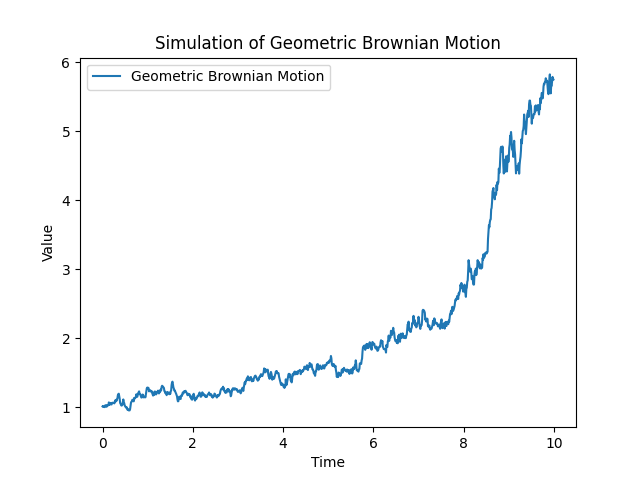

Introduction
Stochastic processes and Stochastic Differential Equations (SDEs) are fundamental concepts in the field of probability and mathematical finance, providing mathematical models to describe random phenomena evolving over time. Exploring the simulation of stochastic processes offers valuable insights into the dynamics and uncertainties inherent in various real-world scenarios. The accompanying Python script employs the Euler-Maruyama method to simulate one such stochastic process – the geometric Brownian motion.
Visualization of Geometric Brownian Motion:
The resulting plot illustrates the trajectory of the simulated geometric Brownian motion over time. The stochastic nature of the process is evident as the path evolves, showcasing the characteristic random fluctuations inherent in such processes. The Euler-Maruyama method provides a numerical approach to capturing the continuous-time evolution of the stochastic process through discrete-time simulations.
Practical Significance:
Stochastic processes and SDEs find applications in various fields, including finance, physics, biology, and more. Understanding and simulating these processes enable researchers and practitioners to model and analyze complex systems subject to random influences. The geometric Brownian motion, in particular, has wide-ranging implications in financial modeling and risk management.
Stochastic Processes Plot:
Conclusion:
Exploring the simulation of stochastic processes provides a valuable foundation for understanding the behavior of random systems. As we delve into the complexities of dynamic and uncertain phenomena, the application of stochastic processes and SDEs becomes increasingly relevant for making informed predictions and decisions in diverse scientific and financial domains.